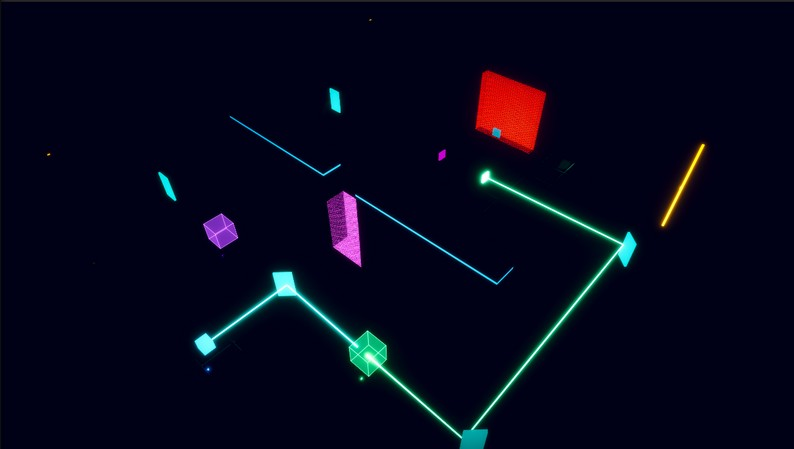

ACTUAL GAMEPLAY
01 / PUZZLE
Playable on itch.io
Refract
A puzzle built around a beam of light.
Rotate mirrors, route coloured lasers, and unlock the path forward. Simple geometry and custom shaders give the puzzle its identity.
My work & credits
Solo development: puzzle assembly, scene setup, primitive geometry, materials, and my own Shader Graph work. Code developed in Rider, integrated and tested in Unity.
Design focus: making the laser path readable and mirror adjustments feel controlled.